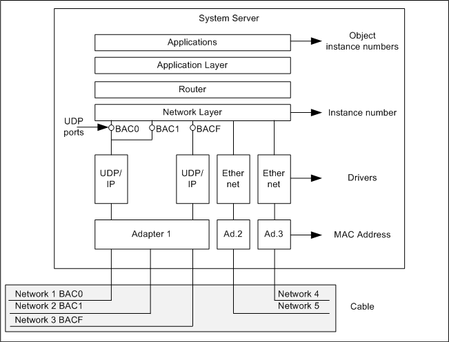
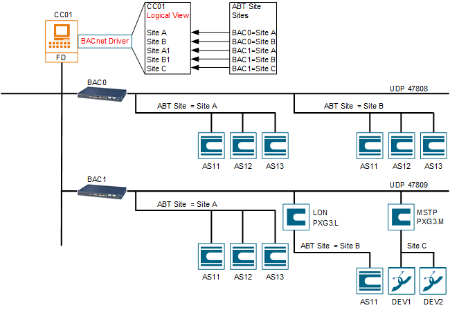
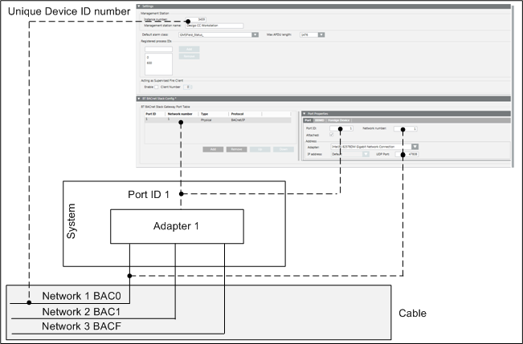
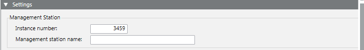
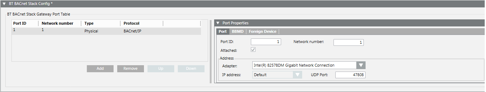
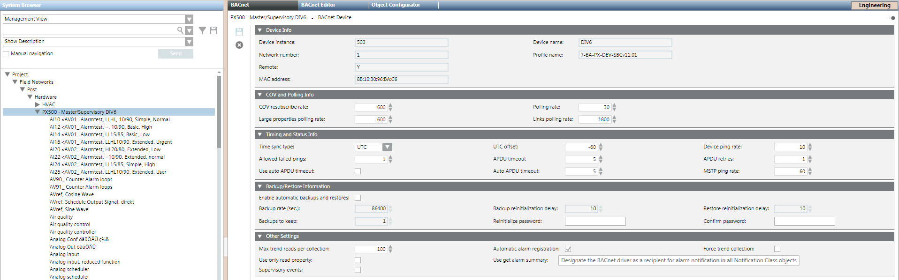
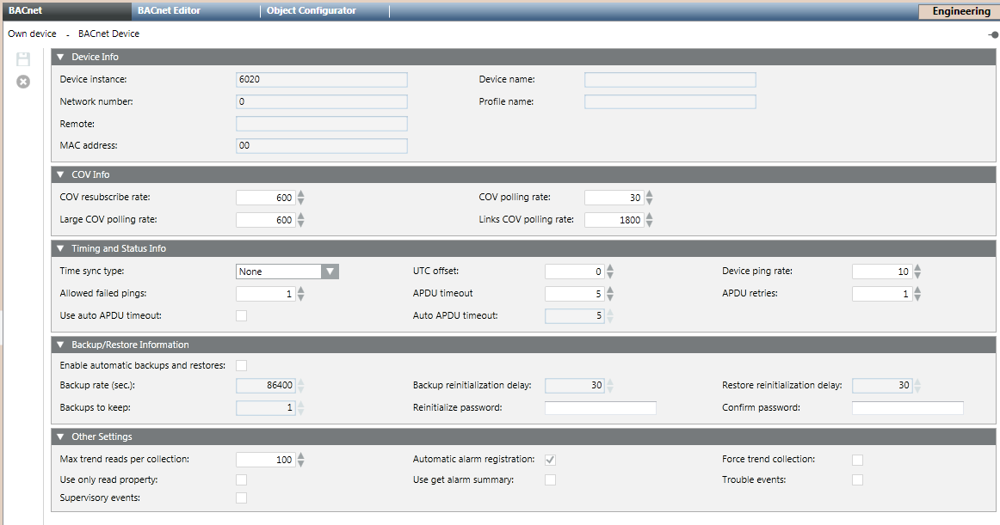
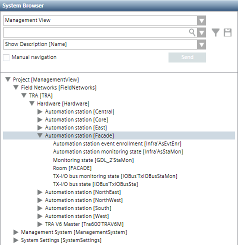

Information on Drivers, Network, and Import Process
Creating and Configuring the BACnet Driver
Desigo Automation communication is based on the BACnet standard protocol BACnet is a building automation and control networking protocol designed to meet the communication needs of building automation and control systems, as well as safety and security applications.
The system uses BACnet in combination with IP networks (Ethernet). This solution is called BACnet/IP although it is referred to as BACnet in this documentation.
The management platform connection with Desigo Automation requires a driver to handle BACnet communications.
In System Browser, you create BACnet drivers in the Management View. You configure the related parameters in the driver that appears after creation.
You can create one or more drivers depending on your system configuration. Please apply the following guidelines:
- Always use a dedicated driver for Desigo Automation integration. BACnet connections for Desigo and other systems (for example, Sinteso FS20) use their own BACnet drivers.
- Multiple Desigo Automation BACnet connections can share the same driver as long as the Instance number required for the driver by Desigo Automation is the same for all related BACnet networks.
You must create separate drivers to match the instances required on the different networks, if the ID has to be different across the networks (that is, if the BACnet client configuration on all Desigo Automation systems does not include a common instance number for the driver).
System Structure for Network and BACnet Driver
The system is flexibly designed and can be configured to meet various project requirements and extended as needed. When referring to BACnet in building automation and control, only a single UDP Port BAC0 (47808) is used for a simple configuration. This port must be open when using a firewall.
For larger plants, various protocols may be used, but an adapter with an associated port number is required for each protocol type. One adapter is enough for the same protocol (in the drawing below, UDP port BAC0, BAC1, BACF uses one adapter for BACnet/IP). One to n drivers must be created and configured depending on the anticipated data transfer or security aspects. The following example illustrates how BAC0 and BAC1 use the same driver and adapter 1. The UDP port BACF also uses adapter 1 but configured with its own driver due to the anticipated data volume.

The following example shows a Desigo topology featuring multiple networks and sites. These networks and sites are assigned to a minimum of one BACnet Driver. Networks created by ABT Site require a Logical View for the BACnet objects in System Browser. The Desigo automation and control wizard is recommended for a uniform depiction in Desigo CC and ABT Site as well as using the names from ABT Site for the Logical View.

BACnet Configuration: Virtual Network Number and Device Identifier
On IP infrastructures applying UDP services, a BACnet network (BACnet/IP) consists of one or more IP subnets assigned to the same BACnet virtual network number. In a BACnet virtual network, BACnet devices are addressed by a unique Device Identifier (Device ID.)
When BACnet is used, all networked units including the system are BACnet devices and must have a unique Device ID, which is assigned to a BACnet driver.

Routing Services for Multiple IP Subnets Networks
Single IP subnet networks allow all BACnet devices to communicate among them with no additional configuration needs. However, BACnet networks comprising multiple IP subnets require IP routing services – provided by standard IP equipment – as well as additional BACnet routing services provided by a BACnet Broadcast Management Device (BBMD).
BBMDs handle the BACnet broadcast messages across multiple IP field networks. You must configure one BBMD per IP subnetwork and make BBMDs across field networks aware of each other.
While the BBMD mechanism is used in BACnet to connect two IP field networks with multiple devices using two BBMD nodes, the BACnet protocol can also support a simpler solution to connect single devices from a separate IP subnet. This type of individual BACnet device is referred to as Foreign Device. A foreign device does not provide BBMD services; it just connects individually to the BBMD to communicate with the entire BACnet subnet.
Network Planning Requirements
Before proceeding with the system configuration, make sure that the communication network planning is complete and the following BACnet information is available: the IP and BACnet addresses, BBMD and routing configuration, UPD port, and BACnet virtual network numbers.

Note:
All BACnet routing mechanisms require a working IP infrastructure that enables proper communication between the server and Desigo Automation. Use standard IP tools (for example the ping command) to verify this communication. More information about the BACnet network, see Ethernet, TCP/IP, MS/TP and BACnet Technical Principles (CM110666xx).
Device ID Address Assignment
The BACnet address is defined in the Instance number. The unique BACnet Device ID identifies the server as one of the client stations on the BACnet network.
NOTE: To clarify the client/server definitions, this acts as a server for the management platform, but as a client in the BACnet communication.

Port Settings in BACnet Stack
The BACnet Stack protocol service (BT BACnet Stack), the driver that negotiates network communications with Desigo automation stations, and the parameters for port, BBMD or Foreign Device Table (FDT) settings are included.

Creating a BACnet Network
Using the network wizard, create the BACnet networks in the Management View. You configure the related parameters (including the associated communication driver) in the object that appears after creation. More than one BACnet network can be present. On the BACnet object, you create all objects of Desigo Automation for your network by importing the project data file (*.S1x).
If the network is not required after creation, you can delete it. This results in all imported nodes being removed.
Configuring BACnet Communication Parameters
In the Desigo network structures, the imported ABT Site configuration includes one BACnet device per Desigo automation station. In the Management View of System Browser, the BACnet device is part of the BACnet structure of the Desigo network and is named as defined in ABT Site.
The BACnet tab of the automation station contains various sets of BACnet communication parameters.

BACnet Communication Parameters
Multiple configuration expanders or communication parameters are associated to the Own Device. They are displayed in the BACnet tab.
The list of extensions for communication parameters includes the following:
- Device Info: BACnet communication addresses (read-only). You may need to refer to these values when checking the BACnet network addressing.
- COV and Query Info: BACnet data acquisition rates. You typically do not need to modify the default settings.
- Timing and Status Info: Time synchronization and other time-related options. See Configure the BACnet time synchronization.
- Backup/Restore Information: Desigo Automation supports these functions.
- Other Settings: Further BACnet communication options. You typically do not need to modify the default settings.

Configure the BACnet time synchronization
Desigo automation and control alarms (forwarded to the Desigo automation station via event enrollment) receive a timestamp from the automation station. The time may differ from the management platform time.
Time Synchronization for Desigo Automation and Control Networks
The time synchronization from the management platform is automatically set up on the Desigo PX primary server (UTC). The Desigo PX primary server that receives the time synchronization will internally connect to all other automation stations in the Desigo automation and control network and handle the synchronization of the entire network. The Time Sync type is set to none for all other devices.
Importing Desigo Automation and Control Data
You can import the data structures to the system for Desigo automation stations using a *.S1x data file that was exported from ABT Site. This is a file containing the complete internal structure of one automation station.
Import Procedure
A specialized import procedure can read and identify the BACnet and all the control unit points that correspond with the pre-defined object data types. For each of the objects found in the configuration database file, a new data point is automatically created in the system configuration as an instance of the corresponding data type.
 WARNING
WARNING

Failing to import the latest database file may result in a wrong interpretation of field messages, including potentially severe fire alarms. An Unidentified Event is generated in all cases when a message is received with no corresponding system data point.
In the Management View, you perform the database import in a BACnet Network in the Field Networks folder.
